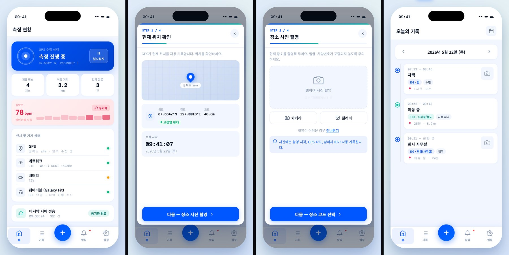

Project 03 / 10 · Planning · National R&D · 2025 to 2026
DEFs: a digital survey system for exposure factors
Proposal and evaluation deck, system diagrams, example screens, the participant app design and training data for AI recognition. Selected; under way since April 2026.
- Client
- A national environmental-health R&D program. Daegu Catholic University (lead), Cheminet (collaborating institution)
- Period
- Proposal 2025 to 2026. Selected; project April 2026 to December 2028, under way
- Role
- Proposal and evaluation deck with the team; diagrams and example screens; participant app screen design; training data
- Deliverables
- Proposal and evaluation deck; system diagrams, flowcharts, example screens; nine-screen participant app design; training data for AI recognition

The project
DEFs develops a digital method and survey system for exposure factors: the figures that describe how people come into contact with chemicals through what they eat, where they spend their time and what they use. For the proposal I drew the system diagrams and flowcharts and made example screens for PC, tablet and mobile, and also drafted the logo; the proposal and the evaluation deck were written with the team.
Participant app
A time-activity survey records where people spend their day: indoors, outdoors, in transit. On paper it relies on memory. The app design replaces the diary with GPS and phone sensors, and asks the participant only to confirm the location, take a photo of the place, pick a place code and an activity. I designed the nine participant screens: sign-in, home, the four input steps, records, alerts and settings.
Training data
I built training datasets for AI that recognizes food, micro-environments and dietary supplements.
Documents and screens
DEFs participant app, screen design (nine screens)